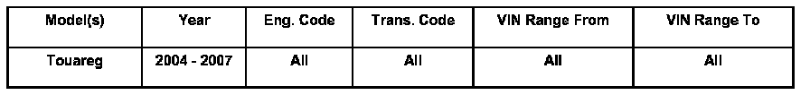
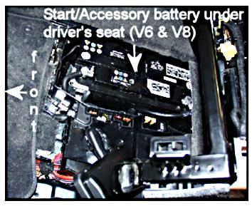
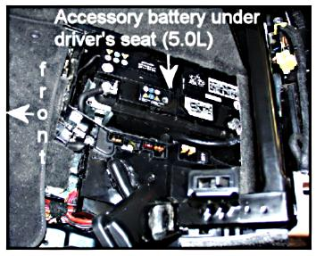
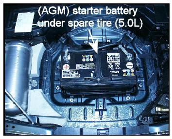
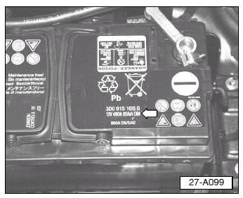
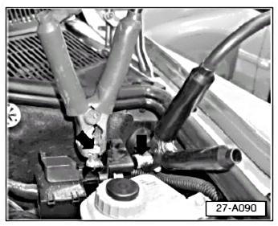
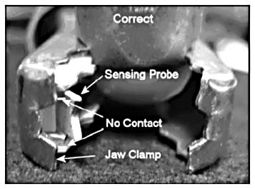
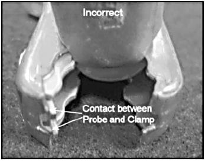

Battery - Testing/Charging Procedures
ConditionBattery, Testing, Charging Using Midtronics MCR340V Battery Analyzer or InCharge 940 (INC-940) Battery Charging Station

27 07 02 Jan. 22, 2007 2012377 Supersedes T.B. Group 27 number 06-05 dated Oct. 6, 2006 due to additional starter battery information.
Technical Background
The Midtronics MCR340V and InCharge 940 are the only approved VW battery testers and chargers that can be used to test and charge batteries in VW vehicles. The use of non-approved battery testers and chargers is not allowed since damage may occur to the battery internally.
Production Solution
No production change required.
Service
WARNING:
Danger of injury! Prior to handling or servicing batteries, read, understand and observe the Warnings and Safety Measures for lead-acid batteries.
NOTE:
In order to prevent damage to the battery or vehicle, observe battery type descriptions and notes.
Tip:
Switch off all electrical consumers.
Switch ignition OFF and remove ignition key.
Testing/charging directly at battery
Tip: Do not remove battery from the vehicle to test the battery; always test battery in the vehicle except for the following conditions:
- Battery was removed for a separate repair prior to performing the battery test.
- Over the counter parts.
When testing or charging battery either installed or removed from vehicle:
Single Battery System - 3.2L, 3.6L, and 4.2L Engines

Start/Accessory battery
- Select Standard (Lead-Acid) for 3.2L, 3.6L, and 4.2L engines (located under driver's seat). 450 DIN*
Always verify using DIN rating as shown on battery label.
Dual Battery System - 5.0L (TDI) Engine

Accessory battery
- Select Standard (Lead-Acid) for 5.0L (TDI) engine (located under driver's seat). 520 DIN*
* Always verify using DIN rating as shown on battery label.

Starter battery
- Select AGM (Absorbed Glass Mat) for 5.0L (TDI) engine (located under spare tire). 480 DIN* or 520 DIN*
Always verify using DIN rating as shown on battery label
NOTE:
The starter battery must be checked independently of the accessory battery.
The starter battery cannot be tested or charged via the remote location in the engine compartment. To test or charge the starter battery, go directly to the battery terminals.

- Always use actual DIN rating as shown on battery label -arrow-.
Tip: Label shown is for example only. DIN or SAE specifications may vary from battery to battery.
If DIN rating is not shown:
- Use SAE value as printed on the battery label.
If using the SAE value rating:
- The Midtronics tester menu option must be changed to achieve accurate results.
- The change from DIN to SAE can be made from the "Other" menu option on the Midtronics tester.
Testing/charging from remote location (Reduced DIN rating requirement)

When using remote location terminals -arrows-, located in the engine compartment, always reduce DIN rating on MCR340V or INC-940 testers.
3.2L, 3.6L, and 4.2Lengines: 270 DIN.
5.0L (TDI) engine: 295 DIN.
NOTE:
For the 5.0L (TDI) engine (dual battery system), the starter battery cannot be tested or charged via the remote location in the engine compartment. To test or charge the starter battery, go directly to the battery terminals.
Tip: The use of these reduced DIN ratings are required to compensate for the internal battery manager and/or the extended length of cable due to the battery location.
MCR 340V and INC-940 displays "System Noise" at beginning of battery test
The MCR 340V and INC-940 may display "System Noise" at beginning of battery test, whether testing directly at battery or at remove location.
This is an infrequent and a normal message which may be caused by:
- Battery monitoring control module.
- Ignition left in "ON" position.
- Accessories or loads turned ON in vehicle with key in "ON" position.
- Loads running with the ignition in the "OFF" position such as: the cooling fan or after-run coolant pump.
- Aftermarket equipment (iPod (due to improper installation), Lojack, remote starters, televisions, lighting, etc.)
This may be overcome by verifying:
- Ignition is in "OFF" position.
- All loads (cooling fan or after-run coolant pump) are OFF prior to testing.
- Any aftermarket equipment is disconnected from the vehicle's electrical system.
Wait a few minutes, then retest again. If test was executed at remote location and condition persists, retest directly at battery.
Battery testing results: Midtronics MCR340V Battery Analyzer vs. INC-940 Battery Charging Station In some cases, when testing a battery using the MCR340V tester:
Test results may be "Good Battery - Recharge".
However, when attempting to charge the same battery with INC-940 Charger:
Results may be to "Replace Battery" either after testing or during the charging process.
Tip: This is normal since both MCR 340V and INC-940 use a conductance test, but the INC-940 also incorporates the use of a 150A load test and "sophisticated" charging algorithm which monitors the charging state of the battery.
In this case, the results of INC-940 should always be used instead of MCR340V.
Charging system test results at battery: "Low Charging Voltage" using the Midtronics MCR 340V Battery Analyzer If performing a charging system test with Midtronics MCR340V tester directly at the battery:
Test results may be "Problem - Low Charging Voltage" .
This result may be due to a faulty generator, however, do not automatically assume that the generator is faulty. Since the MCR340V is connected at the battery, the low charging voltage could be due to excessive voltage drop on the generator-battery cable, poor connections, contaminated or faulty grounds in the charging system.
To deem the generator faulty:
- Verify charging voltage and current output, directly at generator, using the 5051 measurement tools functions.
Tip: Test generator at the back or as close as possible to achieve accurate results.
Tip: Failure to properly diagnose the issue may lead to the replacement of unnecessary parts which could result in a denied warranty claim.
Charging system test for dual batteries using the MCR340V
- When performing the charging system test, using the MCR340V, perform it at either battery using the 5051B measurement tool.
Charging system test results at remote location: "Excess Ripple Detected" using the Midtronics MCR340V Battery Analyzer If performing a charging system test with Midtronics MCR340V tester at remote location terminal:
Test results may be "Problem - Excess Ripple Detected".
Tip: This result may be due to periodic "system noise" in the vehicle's electronics system or possible low battery voltage.
To ensure test results are accurate:
- Always retest directly at battery and perform any action as directed by Midtronics tester (good, recharge or replace).
- Perform charging system test again at battery.
Battery testing/charging: INC-940 Battery Charging Station -Automatic Mode-
When using INC-940 Battery Charging Station in "Automatic Mode" and testing or charging a deeply discharged battery:
INC-940 may continuously display a message "Are clamps connected?" In order to test battery:
- Manually charge battery for 30 minutes and perform test again.
Battery testing/charging: INC-940 Battery Charging Station -Manual Mode-
When using INC-940 Battery Charging Station in "Manual Mode" and testing or charging a deeply discharged battery:
INC-940 may display a message "Are clamps connected?" twice.
This is not a result of defective INC-940 test equipment, but is a safety feature of the INC-940 to ensure cables are connected to the battery before power is turned ON.
INC-940 Battery Charging Station - always displays "Check Connections"
The INC-940 may always display the message to "Check Connections" after cables are connected to the battery terminals.
This is most likely due to the sensing probe making contact with the clamp.
Tip: There is one sensing probe on each clamp, (+) and (-), make sure to check both!

- There must be no contact between the inside connection and the outside jaw of the clamp, -arrows- as shown.

- Inside connection is bent and touching the outside of the clamp, -arrows- as shown.
If the clamp is incorrect:
- Use a small flat tool and gently bend the sensing probe so it does not make contact with the clamp.
If this does not resolve the issue:
- Contact Midtronics Corporation Customer Service Department at 1-800-776-1995 for assistance.
Warranty
Information only.
Required Parts and Tools
No Special Tools required.